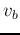
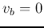
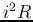
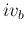
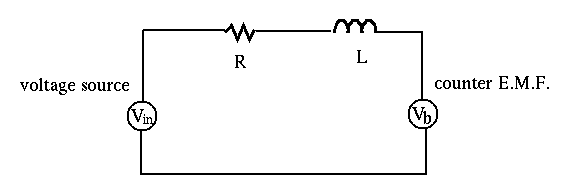

Modeling of Electrical Motor
A motor is modeled by a resistance R, an inductance L and a back or counter EMF (electromotive force) voltage . The counter EMF is directly related to the velocity and angular velocity, which in turn is related to the mechanical work done by the motor.
When the motor runs without a load (assuming zero friction),  and it can be simply modeled by R and L in series. The only power consumed is , for the internal heat up of the motor due to R. When the load is not zero, the is not zero and the power consumed by the motor is .
